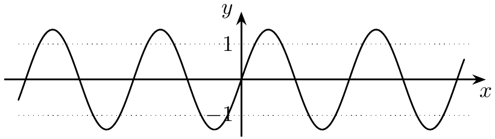
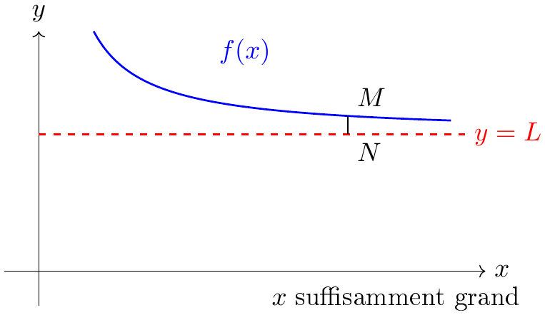
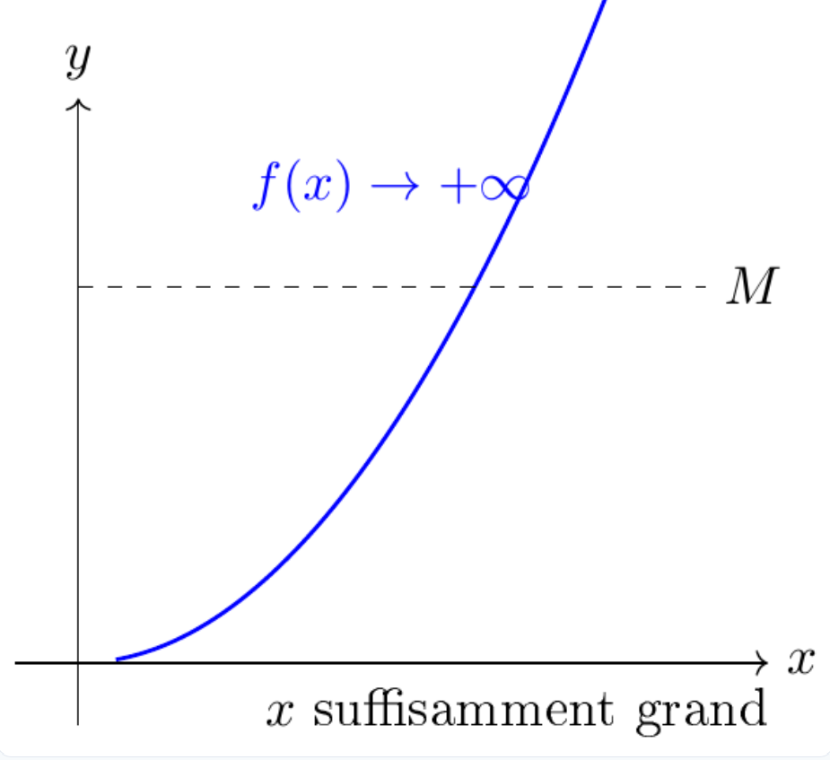
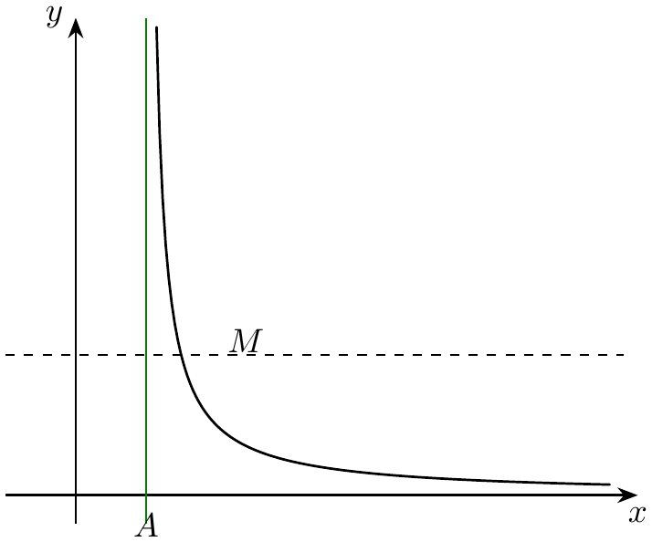
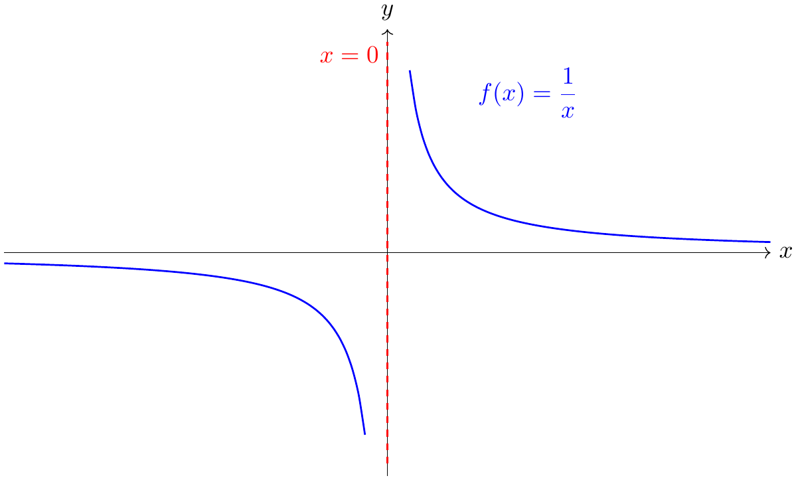
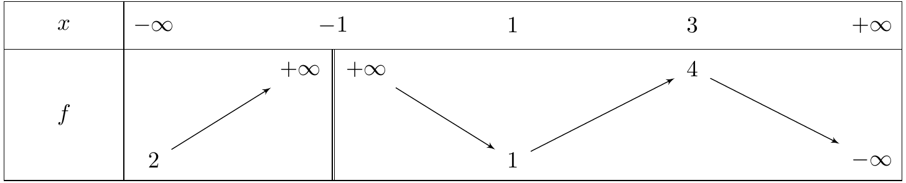
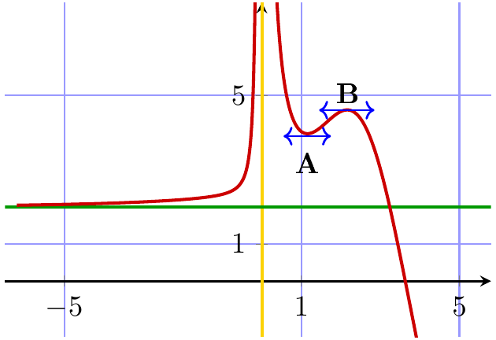
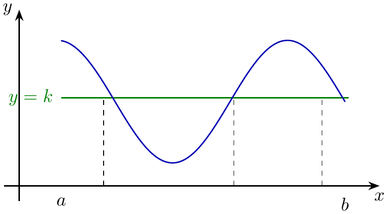
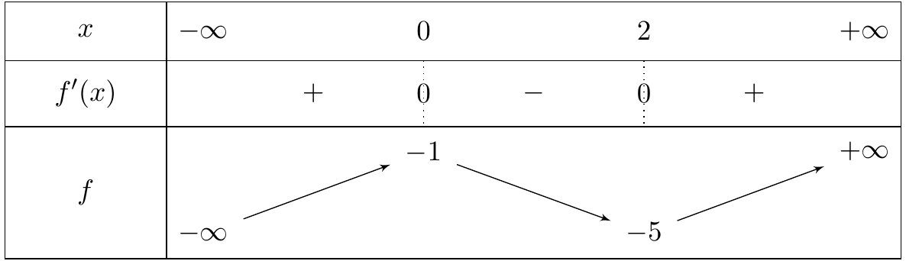

Chapitre 5 : Étude de fonction – Limite et continuité
Terminale spécialité · Chapitre 5 - Limite et continuité · cours de Frederik de Peyrelongue
\newpage
I. Limite d'une fonction à l'infini
I.1 Fonction sans limite à l'infini
Il existe des fonctions qui ne possèdent pas de limite à l'infini. C'est le cas des fonctions sinusoïdales.

I.2 Limite finie à l'infini
On dit que la fonction $f$ admet pour limite $L$ en $+\infty$ si tout intervalle ouvert contenant $L$ contient toutes les valeurs de $f(x)$ dès que $x$ est suffisamment grand, et on note
Notation mathématique :

- La droite d'équation $y=L$ est asymptote horizontale à la courbe représentative de la fonction $f$ en $+\infty$ si $\limx{+\infty}f(x)=L$.
- La droite d'équation $y=L$ est asymptote horizontale à la courbe représentative de la fonction $f$ en $-\infty$ si $\limx{-\infty}f(x)=L$.
Remarque. Lorsque $x$ tend vers $+\infty$, la courbe de la fonction « se rapproche » de son asymptote : la distance $MN$ tend vers $0$.
$f(x)=5+\dfrac{1}{x}$.
Lorsque $x$ devient très grand, la fonction $f$ se rapproche de $5$ de plus en plus sans le toucher :
Graphiquement, la fonction devient horizontale : on dit que $\mathcal{C}_{f}$ admet une asymptote horizontale au voisinage de $+\infty$.
I.3 Limite infinie en $+\infty$ et $-\infty$
On dit que la fonction $f$ admet pour limite $+\infty$ en $+\infty$ si, pour tout nombre $M$ réel aussi grand soit-il, il existe une valeur de $A$ telle que, pour $x$ supérieur à $A$, on aura $f(x)>M$, et on note
Notation mathématique :
On dit que la fonction $f$ admet pour limite $-\infty$ en $+\infty$ si, pour tout nombre $M$ réel aussi négatif soit-il, il existe une valeur de $A$ telle que, pour $x$ supérieur à $A$, on aura $f(x)<M$, et on note
Notation mathématique :

La fonction définie par $f(x)=x^{2}$ a pour limite $+\infty$ lorsque $x$ tend vers $+\infty$.
En effet, les valeurs de la fonction deviennent aussi grandes que l'on souhaite dès que $x$ est suffisamment grand. Si on prend un réel $a$ quelconque, l'intervalle $]a\,;+\infty[$ contient toutes les valeurs de la fonction dès que $x$ est suffisamment grand.
I.4 Limites des fonctions usuelles
- $\limx{+\infty}x^{2}=+\infty$ et $\limx{-\infty}x^{2}=+\infty$ ;
- $\limx{+\infty}x^{3}=+\infty$ et $\limx{-\infty}x^{3}=-\infty$ ;
- $\limx{+\infty}x^{n}=+\infty$ et $\limx{-\infty}x^{n}=+\infty$ (pour $n$ pair) ;
- $\limx{+\infty}x^{n}=+\infty$ et $\limx{-\infty}x^{n}=-\infty$ (pour $n$ impair) ;
- $\limx{+\infty}\sqrt{x}=+\infty$ ;
- $\limx{+\infty}\dfrac{1}{x}=0$ et $\limx{-\infty}\dfrac{1}{x}=0$ ;
- $\limx{+\infty}\e^{x}=+\infty$ et $\limx{-\infty}\e^{x}=0$.
II. Limite d'une fonction en un réel $A$
II.1 Limite infinie en un point
On dit que la fonction $f$ admet pour limite $+\infty$ en $A$ si tout intervalle $]a\,;+\infty[$, $a$ réel, contient toutes les valeurs de $f(x)$ dès que $x$ est suffisamment proche de $A$, et on note $\limx{A}f(x)=+\infty$.
Notation mathématique :
\[ \forall a>0,\ \exists\mu,\ \forall x,\ |x-A|<\mu \Longrightarrow f(x)>a . \]- On dit que la fonction $f$ admet pour limite $-\infty$ en $A$ si tout intervalle $]-\infty\,;b]$, $b$ réel, contient toutes les valeurs de $f(x)$ dès que $x$ est suffisamment proche de $A$, et on note $\limx{A}f(x)=-\infty$.

La droite d'équation $x=A$ est asymptote verticale à la courbe représentative de la fonction $f$ si
Remarque. Certaines fonctions admettent des limites différentes en un réel $A$ selon que $x>A$ ou $x<A$.
Considérons la fonction inverse définie sur $\R^{*}$ par $f(x)=\dfrac{1}{x}$.
- Si $x<0$ : lorsque $x$ tend vers $0$, $f(x)$ tend vers $-\infty$ et on note $\lim\limits_{\substack{x\to 0\\ x<0}}f(x)=-\infty$ ou $\lim\limits_{x\to 0^{-}}f(x)=-\infty$.
- Si $x>0$ : lorsque $x$ tend vers $0$, $f(x)$ tend vers $+\infty$ et on note $\lim\limits_{\substack{x\to 0\\ x>0}}f(x)=+\infty$ ou $\lim\limits_{x\to 0^{+}}f(x)=+\infty$.
On parle de limite à gauche de $0$ et de limite à droite de $0$.

II.2 Limite en $0$ des fonctions élémentaires
| $f(x)$ | $\dfrac{1}{x^{n}}$ | $\dfrac{1}{\sqrt{x}}$ |
| $\lim\limits_{x\to 0^{+}}f(x)$ | $+\infty$ | $+\infty$ |
| $\lim\limits_{x\to 0^{-}}f(x)$ | $+\infty$ \ $n$ pair $-\infty$ \ $n$ impair | non défini |
II.3 Limite finie en un point
Une fonction $f$ a pour limite $\ell$ en $a$ si tout intervalle ouvert contenant $\ell$ contient toutes les valeurs de $f(x)$ pour $x$ assez proche de $a$.
On note alors $\limx{a}f(x)=\ell$.
Notation mathématique :
Soit $a$ un réel.
- Si $a\geqslant 0$, $\limx{a}\sqrt{x}=\sqrt{a}$.
- Si $P$ est un polynôme, alors $\limx{a}P(x)=P(a)$.
- Si $F$ est une fonction rationnelle (quotient de deux polynômes) définie en $a$, alors $\limx{a}F(x)=F(a)$.
- $\limx{a}\cos(x)=\cos(a)$ et $\limx{a}\sin(x)=\sin(a)$.
- $\limx{a}\e^{x}=\e^{a}$.
Soit $f$ une fonction définie et dérivable sur $\R\setminus\{-1\}$ dont on donne le tableau de variations ci-dessous.
- Donner les limites de $f$ en $+\infty$, $-\infty$ et $-1$.
- Préciser les asymptotes.
- Tracer une allure de $\mathcal{C}_{f}$.

Correction.
D'après le tableau :
- $\limx{-\infty}f(x)=2$ : $\mathcal{C}_{f}$ admet donc, au voisinage de $-\infty$, une asymptote horizontale d'équation $y=2$.
- $\limx{+\infty}f(x)=-\infty$ : pas d'asymptote horizontale.
- $\lim\limits_{\substack{x\to -1\\ x<-1}}f(x)=+\infty$ et $\lim\limits_{\substack{x\to -1\\ x>-1}}f(x)=+\infty$ : $\mathcal{C}_{f}$ admet donc, au voisinage de $-1$, une asymptote verticale d'équation $x=-1$.

III. Opérations sur les limites
$\alpha$ peut désigner $+\infty$, $-\infty$ ou un nombre réel.
III.1 Limite d'une somme
| $\lim\limits_{x\to\alpha}f(x)=$ | $L$ | $L$ | $L$ | $+\infty$ | $-\infty$ | $+\infty$ |
| $\lim\limits_{x\to\alpha}g(x)=$ | $L'$ | $+\infty$ | $-\infty$ | $+\infty$ | $-\infty$ | $-\infty$ |
| $\lim\limits_{x\to\alpha}f(x)+g(x)=$ | $L+L'$ | $+\infty$ | $-\infty$ | $+\infty$ | $-\infty$ | F.I.* |
* Forme indéterminée : on ne peut pas prévoir la limite éventuelle.
$f(x)=x^{2}+\dfrac{1}{x}$.
III.2 Limite d'un produit
$\infty$ désigne $+\infty$ ou $-\infty$.
| $\lim\limits_{x\to\alpha}f(x)=$ | $L$ | $L$ | $\infty$ | $0$ |
| $\lim\limits_{x\to\alpha}g(x)=$ | $L'$ | $\infty$ | $\infty$ | $\infty$ |
| $\lim\limits_{x\to\alpha}f(x)g(x)=$ | $L\,L'$ | $\infty$ | $\infty$ | F.I. |
On applique la règle des signes pour déterminer si le produit est $+\infty$ ou $-\infty$.
Or $\limx{-\infty}(x-5)=-\infty$ et $\limx{-\infty}\left(3+x^{2}\right)=+\infty$.
D'après la règle sur la limite d'un produit :
III.3 Limite d'un quotient
$\infty$ désigne $+\infty$ ou $-\infty$.
| $\lim\limits_{x\to\alpha}f(x)=$ | $L$ | $L\neq 0$ | $L$ | $\infty$ | $\infty$ | $0$ |
| $\lim\limits_{x\to\alpha}g(x)=$ | $L'\neq 0$ | $0$ | $\infty$ | $L$ | $\infty$ | $0$ |
| $\lim\limits_{x\to\alpha}\dfrac{f(x)}{g(x)}=$ | $\dfrac{L}{L'}$ | $\infty$ | $0$ | $\infty$ | F.I. | F.I. |
Or $\limx{3}1-2x=-5$, et $\lim\limits_{\substack{x\to 3\\ x<3}}x-3=0^{-}$, $\lim\limits_{\substack{x\to 3\\ x>3}}x-3=0^{+}$.
D'après la règle sur la limite d'un quotient :
Remarque. Comme pour les suites, on rappelle que les quatre formes indéterminées sont, par abus d'écriture :
III.4 Composition de limite
Soient $u$ une fonction définie au voisinage de $A$ (réel ou infini) et $f$ une fonction définie au voisinage de $b$ (réel ou infini). Si
alors
Autrement dit. On pose $X=u(x)$ : lorsque $x$ tend vers $A$, la variable $X$ tend vers $b$ ; la limite de $f$ en $b$ fournit alors celle de $f\circ u$ en $A$.
Calculons $\displaystyle\limx{0^{+}}\e^{1/x}$.
On pose $u(x)=\dfrac{1}{x}$ et $f(X)=\e^{X}$, de sorte que $\e^{1/x}=f\big(u(x)\big)$.
- $\limx{0^{+}}\dfrac{1}{x}=+\infty$ ;
- $\lim\limits_{X\to+\infty}\e^{X}=+\infty$.
D'après le théorème de composition de limite :
Remarque. En $0^{-}$, on a $\limx{0^{-}}\dfrac{1}{x}=-\infty$ et $\lim\limits_{X\to-\infty}\e^{X}=0$ : par composition, $\limx{0^{-}}\e^{1/x}=0$. Les limites à gauche et à droite étant différentes, la fonction $x\mapsto\e^{1/x}$ n'a pas de limite en $0$.
III.5 Méthode : lever une forme indéterminée sur les fonctions polynômes et rationnelles
Calculer $\displaystyle\limx{+\infty}-3x^{3}+2x^{2}-6x+1$.
On a $\limx{+\infty}-3x^{3}=-\infty$ et $\limx{+\infty}2x^{2}=+\infty$.
On reconnaît une forme indéterminée du type « $\infty-\infty$ ».
Levons l'indétermination par la factorisation par le monôme de plus haut degré :
Or $\limx{+\infty}\dfrac{2}{x}=\limx{+\infty}\dfrac{6}{x^{2}} =\limx{+\infty}\dfrac{1}{x^{3}}=0$.
Donc, par limite d'une somme :
De plus $\limx{+\infty}x^{3}=+\infty$, donc, par limite d'un produit :
Soit :
Calculer $\displaystyle\limx{+\infty}\frac{2x^{2}-5x+1}{6x^{2}-5}$ : c'est une limite de type « $\dfrac{\infty}{\infty}$ ».
Levons l'indétermination en factorisant le plus grand monôme au numérateur et au dénominateur :
Or $\limx{+\infty}\dfrac{5}{x}=\limx{+\infty}\dfrac{1}{x^{2}} =\limx{+\infty}\dfrac{5}{x^{2}}=0$.
Donc, par limite d'une somme :
Donc, par limite d'un quotient :
Soit :
Calculer $\displaystyle\limx{-\infty}\frac{3x^{2}+2}{4x-1}$ : il s'agit d'une forme indéterminée du type « $\dfrac{\infty}{\infty}$ ».
Levons l'indétermination en factorisant le plus grand monôme au numérateur et au dénominateur :
Or $\limx{-\infty}\dfrac{1}{x}=\limx{-\infty}\dfrac{2}{x^{2}}=0$.
Donc, par limite d'une somme :
Donc, par limite d'un quotient :
De plus $\limx{-\infty}x=-\infty$, donc, par limite d'un produit :
Soit :
IV. Limites et comparaison
IV.1 Théorème de comparaison
Soient $f$ et $g$ deux fonctions définies sur un intervalle $I$ de la forme $I=[A\,;+\infty[$ où $A$ est soit un réel, soit $-\infty$.
- Si, pour tout $x\in I$, $f(x)\geqslant g(x)$ et $\limx{+\infty}g(x)=+\infty$, alors $\limx{+\infty}f(x)=+\infty$.
- Si, pour tout $x\in I$, $f(x)\leqslant g(x)$ et $\limx{+\infty}g(x)=-\infty$, alors $\limx{+\infty}f(x)=-\infty$.
On suppose que, pour tout $x\in I$, $f(x)\geqslant g(x)$ et $\limx{+\infty}g(x)=+\infty$.
\[ \limx{+\infty}g(x)=+\infty \iff \forall M,\ \exists A,\ x\geqslant A,\ g(x)\geqslant M . \]Or, pour tout $x\in I$, $f(x)\geqslant g(x)$, donc
\[ \forall M,\ \exists A,\ x\geqslant A,\ f(x)\geqslant M \iff \limx{+\infty}f(x)=+\infty . \]On suppose que, pour tout $x\in I$, $f(x)\leqslant g(x)$ et $\limx{+\infty}g(x)=-\infty$.
\[ \limx{+\infty}g(x)=-\infty \iff \forall M,\ \exists A,\ x\geqslant A,\ g(x)\leqslant M . \]Or, pour tout $x\in I$, $f(x)\leqslant g(x)$, donc
\[ \forall M,\ \exists A,\ x\geqslant A,\ f(x)\leqslant M \iff \limx{+\infty}f(x)=-\infty . \]
Pour tout $x\in\R$, $\e^{x}\geqslant x+1$ (inégalité de convexité).
En déduire la limite $\displaystyle\limx{+\infty}\e^{x}$.
Correction.
- $\limx{+\infty}x+1=+\infty$ ;
- $\forall x\in\R$, $\e^{x}\geqslant x+1$ ;
d'après le théorème de comparaison,
IV.2 Théorème d'encadrement (théorème des gendarmes)
Soient $f$, $g$ et $h$ trois fonctions définies sur un intervalle $I$ de la forme $I=[A\,;+\infty[$ où $A$ est soit un réel, soit $-\infty$. Soit $\ell$ un nombre réel ou $+\infty$ ou $-\infty$. Si, pour tout $x\in I$,
et si les fonctions $g$ et $h$ ont la même limite $\ell$ en $+\infty$, alors $\limx{+\infty}f(x)=\ell$.
Cas où $\alpha=+\infty$.
On suppose que, pour tout $x\in I$, $g(x)\leqslant f(x)\leqslant h(x)$ et $\limx{+\infty}g(x)=\limx{+\infty}h(x)=\ell$.
Quel que soit $\varepsilon>0$ :
Posons $M=\max(M_{1}\,;M_{2})$.
Or, pour tout $x\in I$, $g(x)\leqslant f(x)\leqslant h(x)$, donc
Pour $x>M$ :
Conclusion.
Calculer $\displaystyle\limx{+\infty}\frac{\sin(x)}{x}$.
Correction.
- Pour tout $x\in\R^{++}$, $-1\leqslant\sin(x)\leqslant 1$, donc $-\dfrac{1}{x}\leqslant\dfrac{\sin(x)}{x}\leqslant\dfrac{1}{x}$ (car $x>0$).
- $\limx{+\infty}-\dfrac{1}{x}=0$ et $\limx{+\infty}\dfrac{1}{x}=0$.
D'après le théorème des gendarmes,
IV.3 Théorème de croissance comparée
Pour tout $n\in\N$,
Application : calculer $\displaystyle\limx{+\infty}\e^{x}-x^{2}$.
On a $\limx{+\infty}\e^{x}=+\infty$ et $\limx{+\infty}-x^{2}=-\infty$, donc $\limx{+\infty}\e^{x}-x^{2}$ est une forme indéterminée.
On factorise $x^{2}$ :
D'après le théorème de croissance comparée, $\limx{+\infty}\dfrac{\e^{x}}{x^{2}}=+\infty$, donc par somme $\limx{+\infty}\dfrac{\e^{x}}{x^{2}}-1=+\infty$.
Par produit :
V. Fonction continue
V.1 Définition
Soient $f$ une fonction définie sur un intervalle $I$ et $a$ un réel appartenant à $I$.
- $f$ est continue en $a$ lorsque $f$ admet une limite en $a$ et que cette limite est $f(a)$.
- $f$ est continue sur un intervalle $I$ lorsqu'elle est continue en $a$ pour tout $a\in I$.
Pour étudier la continuité en $a$ d'une fonction $f$ :
- on calcule la limite de $f$ en $a$ pour $x<a$ ;
- on calcule la limite de $f$ en $a$ pour $x>a$ ;
- on compare les valeurs obtenues à $f(a)$ : si $\lim\limits_{\substack{x\to a\\ x<a}}f(x) =\lim\limits_{\substack{x\to a\\ x>a}}f(x)=f(a)$, alors $f$ est continue en $a$.
La fonction $f$ définie sur $\R$ par
Donc $f$ n'est pas continue en $2$.
La fonction $f$ définie sur $\R$ par
Étudions la continuité en $3$.
On a $\lim\limits_{\substack{x\to 3\\ x<3}}f(x) =\lim\limits_{\substack{x\to 3\\ x>3}}f(x)=f(3)$, donc $f$ est continue en $3$.
V.2 Opérations et fonctions continues
Toute fonction dérivable sur un intervalle $I$ est continue sur $I$.
On considère une fonction $f$ définie et dérivable sur un intervalle $I$ ; quels que soient $a$ et $x$ deux réels appartenant à $I$.
Pour tout $x\neq a$, on a
Or $\limx{a}x-a=0$ et $\limx{a}\dfrac{f(x)-f(a)}{x-a}=f'(a)$, car $f$ est dérivable sur $I$.
Par produit, $\limx{a}\dfrac{f(x)-f(a)}{x-a}\,(x-a)=0$, donc $\limx{a}f(x)=f(a)$.
Conclusion. Quel que soit $a\in I$, $f$ est continue en $a$, donc $f$ est continue sur $I$.
Remarque. La réciproque est fausse : $f(x)=|x|$ est continue en $0$ mais n'est pas dérivable en $0$.
- Les fonctions de référence (polynômes, valeur absolue, exponentielle, racine carrée, fonction inverse, fonction logarithme et fonction trigonométrique) sont continues sur leur intervalle de définition.
- La somme et le produit de fonctions continues sur un intervalle $I$ sont continus sur cet intervalle.
- Si $f$ et $g$ sont continues sur $I$ et si $g$ ne s'annule pas sur $I$, alors le quotient $\dfrac{f}{g}$ est continu sur $I$.
- Si $f:I\to J$ et $g:J\to\R$ sont continues, alors $g\circ f$ est continue sur $I$.
les limites.
Soient $a\in I$ ; si $\limx{a}f(x)=f(a)$ et $\limx{a}g(x)=g(a)$, alors
Et, pour $g(a)\neq 0$,
Donc la somme et le produit de deux fonctions continues sont continus, et, pour le quotient, il faut ajouter la condition $g(a)\neq 0$.
Application. Soit $f$ la fonction définie sur $[0\,;+\infty[$ par $f(x)=x^{3}+2x+\sqrt{x}$.
$f$ est une somme de fonctions continues sur $[0\,;+\infty[$ : elle est donc continue sur $[0\,;+\infty[$.
VI. Théorème des valeurs intermédiaires
VI.1 Cas général
Si $f$ est continue sur $[a\,;b]$, alors, pour tout réel $k$ compris entre $f(a)$ et $f(b)$, l'équation $f(x)=k$ admet au moins une solution dans $[a\,;b]$.
Autrement dit, tout réel $k$ compris entre $f(a)$ et $f(b)$ admet au moins un antécédent par $f$ dans $[a\,;b]$.

Soit $f(x)=\e^{x}$ : montrer que $f(x)=2$ admet une solution dans $[0\,;1]$.
Correction.
- $f$ est continue ;
- $f(0)=1$ et $f(1)=\e\approx 2{,}7$ : $2$ est une valeur intermédiaire.
D'après le théorème des valeurs intermédiaires, l'équation $f(x)=2$ admet au moins une solution dans $[0\,;1]$.
Si $f$ est continue sur $[a\,;b]$ et $f(a)\times f(b)\leqslant 0$, l'équation $f(x)=0$ admet au moins une solution dans $[a\,;b]$.
VI.2 Fonctions strictement monotones
Si $f$ est continue et strictement monotone sur $[a\,;b]$, alors, pour tout réel $k$ compris entre $f(a)$ et $f(b)$, l'équation $f(x)=k$ admet une unique solution dans $[a\,;b]$.
Soit $f(x)=x^{3}-3x^{2}-1$ la fonction définie sur $\R$. Quel est le nombre de solutions de l'équation $f(x)=10$ sur $\R$ ?
Solution. $f$ est une fonction polynôme : elle est donc définie, continue et dérivable sur $\R$.
Pour tout $x\in\R$, $f'(x)=3x^{2}-6x=3x(x-2)$.
Dressons le tableau de variation de $f$ :

Sur $]-\infty\,;2]$, le maximum de $f$ vaut $-1$, donc $f(x)=10$ n'a pas de solution sur cet intervalle.
Sur $[2\,;+\infty[$, $f$ est continue et strictement croissante et $10$ est une valeur intermédiaire. D'après le corollaire du théorème des valeurs intermédiaires, il existe un unique $\alpha\in[2\,;+\infty[$ tel que $f(\alpha)=10$.
Donc l'équation n'admet qu'une seule solution sur $\R$.
VI.3 Dichotomie
Résolution algorithmique de $f(x)=0$.
On identifie un intervalle où une solution existe grâce au TVI.
Le principe de dichotomie consiste à diviser l'intervalle en deux et à choisir la moitié de l'intervalle où la fonction change de signe, et à réitérer ce processus jusqu'à la précision demandée.
def dicho(a,b,p):
n=0
while b-a>=10**(-p):
c=(a+b)/2
if f(a)*f(c)<0:
b=c
else:
a=c
n+=1
return a,b,n